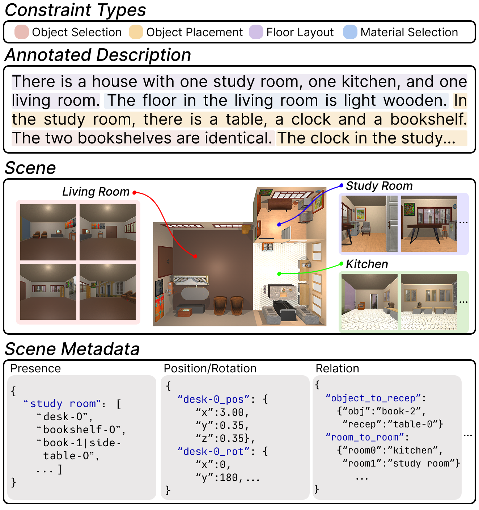
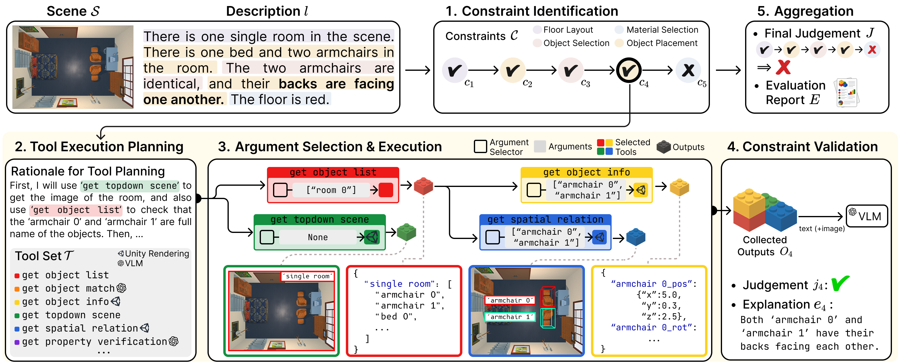
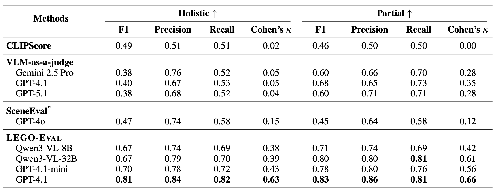

TL;DR We build LEGO, a dataset of 3D scenes aligned with descriptive scene generation instructions, and propose LEGO-Eval, a framework for evaluating the alignment between LLM-generated 3D scene and the given instruction.
Accurately synthesizing 3D scenes from user-provided text descriptions is crucial for developing embodied agents. Despite the importance of scene-description alignment, existing evaluation methods for such text-guided 3D scene synthesis either capture only coarse similarity between the synthesized scene and the user description, or ignore the spatial reasoning for verifying object placement. None of them addressed the fine-grained constraints (e.g., X needs to be in the scene in a Y manner) implied by the description from users. To address this, we introduce LEGO, a benchmark dataset that pairs each user description with human-annotated constraints and a reference scene, and LEGO-Eval, an evaluation framework that decomposes a description into atomic constraints and verifies each one using tools that ground textual references to 3D objects and reason about their spatial relationships. We show that (i) LEGO-Eval evaluates misalignment far more accurately than existing methods and (ii) current scene synthesis approaches achieve only at most 10% success rate in LEGO-Eval.

Dataset Description. LEGO (Language-guided Environment Generation for embOdied agents) is a fully human-curated benchmark for evaluating text-guided 3D scene synthesis. Each instance pairs a fine-grained natural-language description with human-annotated constraints — categorized into floor layout, material selection, object selection, and object placement — a manually constructed reference scene, and rich scene metadata capturing the positions, rotations, scales, and material properties of every scene component. The dataset spans 130 descriptions and 1,250 constraints in total (9.6 per description on average), together with 295 rooms, 2,320 receptacles, 4,518 objects, and 3,974 structural elements, reflecting the complexity and diversity of real-world indoor environments.

Overview. LEGO-Eval begins by taking a fine-grained text instruction and automatically identifying individual constraints that describe layout, materials, objects, and placements. It then plans a sequence of tool executions, selecting from 21 tools that can retrieve visual, textual, and multimodal information from the 3D scene. Next, it selects proper tool arguments — specific rooms, walls, or objects — and executes the tools to gather evidence about each constraint. Finally, LEGO-Eval validates whether each constraint is satisfied and aggregates all binary results into an interpretable overall score showing how well the generated scene aligns with the instruction.

Comparison of evaluation methods. All evaluation methods are tested on the LEGO dataset along with additional scenes that were intentionally created to be misaligned with their instructions, enabling fair comparison between correct and incorrect cases. Performance is measured using F1 score, precision, recall, and Cohen’s kappa at both the holistic level for entire instructions and the partial level for individual constraints. SceneEval cannot assess 41% of the constraints in LEGO due to its fixed evaluation criteria; we evaluate it only on the constraints it can handle for a fair comparison.
@misc{kang2026applestableevaluatingtextguided,
title={Apples on the Table? Evaluating Text-Guided 3D Scene Synthesis via Fine-Grained Constraint Verification},
author={Minseok Kang and Dongwook Choi and Gyeom Hwangbo and Seungwon Lim and Kai Tzu-iunn Ong and Jinyoung Yeo},
year={2026},
eprint={2511.03001},
archivePrefix={arXiv},
primaryClass={cs.CL},
url={https://arxiv.org/abs/2511.03001},
}